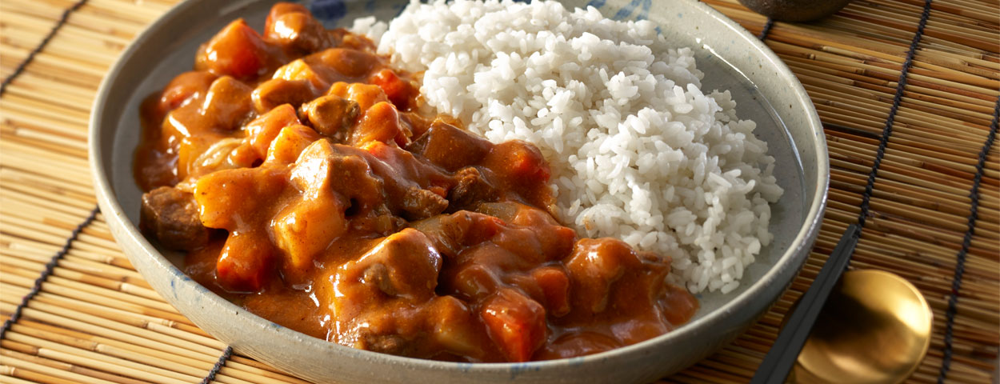

Japanese Curry
Description
This recipe is my typical go to for colder weather! Yields plenty of left overs to last you a week.
Japanese curry tends to lack the spiciness of typical curries and instead emphasizes its sweetness and savoriness.
Do keep in mind that this recipe is time consuming and requires good monitoring.
Prep Time:15 - 30 minutes
Cook Time:2 - 3 hours
Overall Time:2.5 - 3.5 hours
Serving Size:6 - 10 servings
Ingredients
- 2 lbs of cubed bite size chuck beef roast (or preferred cut of beef)
- 3-4 cubed large potatoes
- 1 chopped large carrot or 2-3 medium carrots
- 1 chopped large brown onion
- As much minced garlic as you'd like
- 4-6 Japanese Curry Roux blocks
- 1/4 cup grated apple
- 1 tbsp honey
- 1 tbsp worcestershire
- 2 - 3 cups of water (depends on how you like your sauce)
- cooked rice (as much as you'd like to serve)
Steps
- Heat a medium to large dutch oven or stew pot on medium or medium low heat. Add oil.
- Once oil shimmers, add garlic.
-
Once garlic is fragrent, add your cubed beef and brown each side for 1-3 minutes. DO NOT COOK THROUGH.
(Cooking in batches might be necessary if your pot is too small.)
- Add onions (and beef if you had to do batches) and stir until well coated.
- Add carrots and potatoes, again stir until well coated
- Add water, honey, apple, and worcestershire. Cover pot and bring to a boil.
- Once boiling, lower the heat and simmer for 2-2.5 hours until meat and vegetables are tender.
- Check on it at the 1 hour mark and 2 hour mark. Stir if needed and check meat tenderness.
- Once meat is at desired tenderness,turn off the heat, use a large spoon and some chopsticks to slowly dissolve the curry roux.
- Once roux has fully disolved, give the curry a stir to fully encorporate the roux.
- Serve with cooked rice.